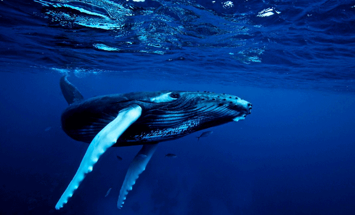

뚱뚱한 체구에 몸길이가 대개 약 12~15 m이다. 전체적으로 검은색이며 배쪽과 가슴지느러미, 꼬리지느러미에 흰색이 섞여 있다. 가슴지느러미와 꼬리지느러미의 하얀 무늬는 개체마다 조금씩 달라, 마치 사람의 지문처럼 각 개체를 구분하는 데 유용하다고 한다. 가장 큰 특징은 긴 가슴지느러미인데 가슴지느러미의 앞가장자리는 물결 모양이다. 또다른 특징은 머리와 턱에 있는 혹으로, 혹에는 1~2개의 털이 있다. 등지느러미는 작고 훨씬 뒤쪽에 있으며, 목과 가슴에는 몸의 축과 평행하게 약 20개의 홈이 있다. 수컷은 7년, 암컷은 5년 전후로 성체가 되며, 수명은 45년에서 100년 사이로 인간과 유사한 편이다.
